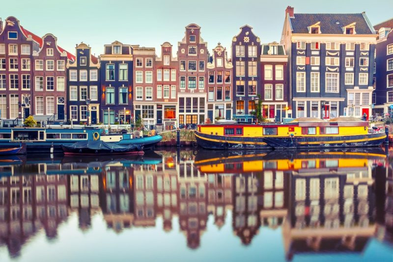
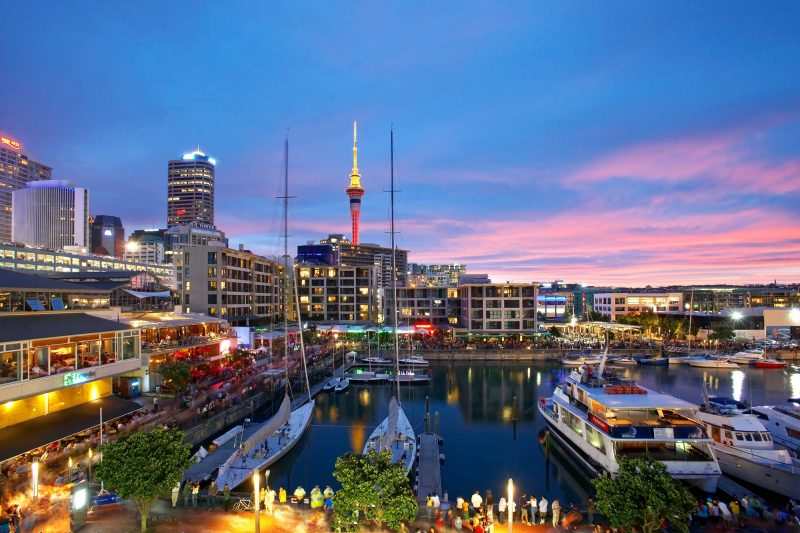
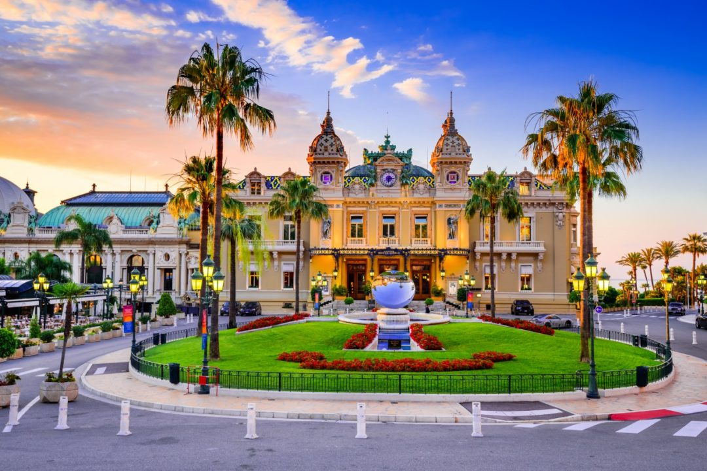
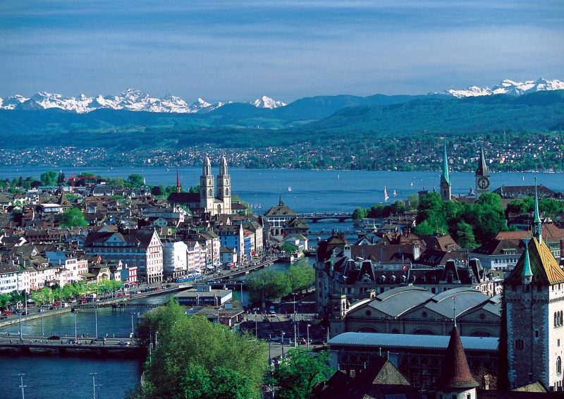
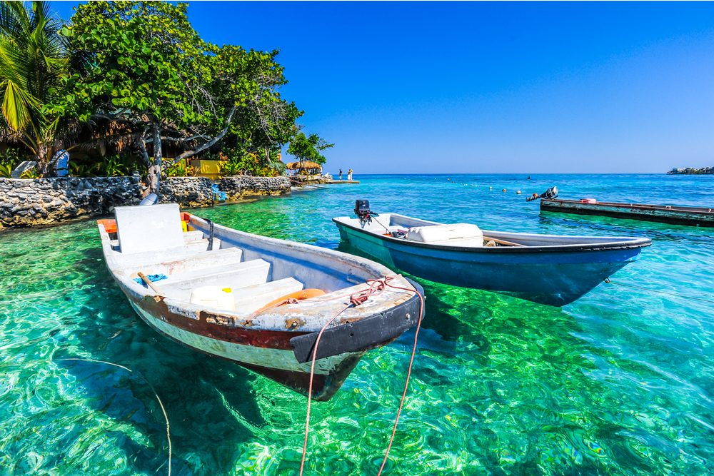
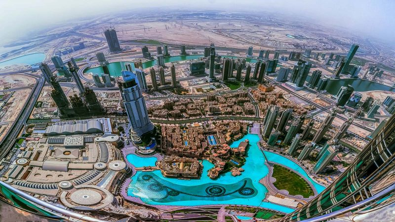
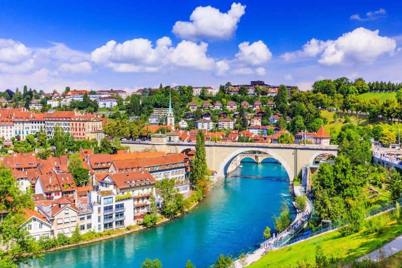

Start Your Journey
Here is Discover the 9 most popular cities in the world for travellers

Amesterdam, Netherlands
It is exceptionally mainstream as one the sexiest urban communities to make a trip solo to. Since the medieval times, it has been among the most bright and loveliest urban communities. The medieval engineering of its incredibly vivid structures makes the place extremely welcoming for voyagers. The energizing nightlife of the city likewise makes it exceptionally well known among men and ladies who jump at the chance to enjoy some nighttime fun.
It is exceptionally mainstream as one the sexiest urban communities to make a trip solo to. Since the medieval times, it has been among the most bright and loveliest urban communities. The medieval engineering of its incredibly vivid structures makes the place extremely welcoming for voyagers. The energizing nightlife of the city likewise makes it exceptionally well known among men and ladies who jump at the chance to enjoy some nighttime fun.

Auckland, New zealand
In New Zealand, it happens to be the biggest city. It is viewed as a standout amongst the most prevalent urban communities on the planet for its nightlife and wonderful shorelines. It is positive for its astonishing recreation courtesies, scholarly open doors, superb work openings and mellow atmosphere conditions. In Asia-Pacific region, it offers a standout amongst the most unrivaled personal satisfaction.
In New Zealand, it happens to be the biggest city. It is viewed as a standout amongst the most prevalent urban communities on the planet for its nightlife and wonderful shorelines. It is positive for its astonishing recreation courtesies, scholarly open doors, superb work openings and mellow atmosphere conditions. In Asia-Pacific region, it offers a standout amongst the most unrivaled personal satisfaction.

Monte Carlo ,Monaco
Monte-Carlo is home to the celebrated Monte Carlo Casino. This glamorous palace is full of frescoes, sculptures, and features an astonishing gold and marble atrium—not to mention the main attraction—gambling! Steeped in 700 years of Grimaldi royal history, Monte-Carlo’s location is stunning, tucked between French mediaeval villages and the Alps. Take in a world-class opera or ballet, bask in the sun on Larvotto Beach or get an adrenaline rush at May's Formula 1 Grand Prix.
Monte-Carlo is home to the celebrated Monte Carlo Casino. This glamorous palace is full of frescoes, sculptures, and features an astonishing gold and marble atrium—not to mention the main attraction—gambling! Steeped in 700 years of Grimaldi royal history, Monte-Carlo’s location is stunning, tucked between French mediaeval villages and the Alps. Take in a world-class opera or ballet, bask in the sun on Larvotto Beach or get an adrenaline rush at May's Formula 1 Grand Prix.

Zurich ,Switzerland
It is viewed as one of the sexiest urban communities on the planet, and is one of the greatest monetary focuses in Switzerland and the globe. It has low tax assessment rate and high measure of riches. In Switzerland, it remains as the greatest goal for tourism. The slopes, lakes and grand magnificence make it a hit with visitors. There is low wrongdoing rate and people in general transportation is world celebrated.
It is viewed as one of the sexiest urban communities on the planet, and is one of the greatest monetary focuses in Switzerland and the globe. It has low tax assessment rate and high measure of riches. In Switzerland, it remains as the greatest goal for tourism. The slopes, lakes and grand magnificence make it a hit with visitors. There is low wrongdoing rate and people in general transportation is world celebrated.

Cartagena, Colombia
Cartagena is a port city on Colombia’s Caribbean coast. By the sea is the walled Old Town, founded in the 16th century, with squares, cobblestone streets and colorful colonial buildings. With a tropical climate, the city is also a popular beach destination. Reachable by boat are Isla de Barú, with white-sand beaches and palm trees, and the Islas del Rosario, known for their coral reefs
Cartagena is a port city on Colombia’s Caribbean coast. By the sea is the walled Old Town, founded in the 16th century, with squares, cobblestone streets and colorful colonial buildings. With a tropical climate, the city is also a popular beach destination. Reachable by boat are Isla de Barú, with white-sand beaches and palm trees, and the Islas del Rosario, known for their coral reefs

Dubai, UAE
This is a port city in the United Middle Easterner Emirates, arranged along the Inlet of Persia. This is one of the most blazing urban areas on the planet and gloats of a stunning nightlife. It appreciates the notoriety of being one of the wealthiest urban communities of the world, and the extravagance of the place without a doubt puts even huge numbers of the American urban communities to disgrace.
This is a port city in the United Middle Easterner Emirates, arranged along the Inlet of Persia. This is one of the most blazing urban areas on the planet and gloats of a stunning nightlife. It appreciates the notoriety of being one of the wealthiest urban communities of the world, and the extravagance of the place without a doubt puts even huge numbers of the American urban communities to disgrace.

Bern , Switzerland
The capital city of Switzerland, Bern is notable for its medieval appeal that it has saved for a long time. With old towers, sandstone exteriors, limit lanes, wellsprings and arcades, it is a city which is presumed for its astounding legacy and culture. It is additionally one among the most smoking urban communities in 2018 for being the center point of Swiss assembling and designing. In a Mercer think about in 2011, it was positioned as the second most-safe city on the planet.
The capital city of Switzerland, Bern is notable for its medieval appeal that it has saved for a long time. With old towers, sandstone exteriors, limit lanes, wellsprings and arcades, it is a city which is presumed for its astounding legacy and culture. It is additionally one among the most smoking urban communities in 2018 for being the center point of Swiss assembling and designing. In a Mercer think about in 2011, it was positioned as the second most-safe city on the planet.

Phi Phi Island, Thailand
Phi Phi consists of a group of six islands. Only 40 km away from Phuket, Phi Phi Don and Phi Phi Leh are the two most famous islands of the six. With their pristine waters and vibrant parties, these islands are a wonderful way to spend a few days in Thailand.With four other islands besides the large ones, Phi Phi houses Bida Nok, Bida Nai, Ko Mai Phai, is also known as Bamboo Island. Phi Phi Islands became famous after the 2000 Hollywood flick 'The Beach' that was shot in Ko Phi Phi Le. Ko Phi Phi Leh houses The "Viking Cave" which is a thriving industry that sells edible birds nests.
Phi Phi consists of a group of six islands. Only 40 km away from Phuket, Phi Phi Don and Phi Phi Leh are the two most famous islands of the six. With their pristine waters and vibrant parties, these islands are a wonderful way to spend a few days in Thailand.With four other islands besides the large ones, Phi Phi houses Bida Nok, Bida Nai, Ko Mai Phai, is also known as Bamboo Island. Phi Phi Islands became famous after the 2000 Hollywood flick 'The Beach' that was shot in Ko Phi Phi Le. Ko Phi Phi Leh houses The "Viking Cave" which is a thriving industry that sells edible birds nests.

Santorini, Greece
santorini is the supermodel of the Greek islands, a head-turner whose face is instantly recognizable around the world: multicolored cliffs soar out of a sea-drowned volcanic crater, topped by whitewashed buildings.With its reputation for dazzling panoramas, romantic sunsets and volcanic-sand beaches, it’s hardly surprising Santorini features on so many travelers bucket lists. If you're planning to join the crowd, here’s what you need to know for your first trip to Santorini.
santorini is the supermodel of the Greek islands, a head-turner whose face is instantly recognizable around the world: multicolored cliffs soar out of a sea-drowned volcanic crater, topped by whitewashed buildings.With its reputation for dazzling panoramas, romantic sunsets and volcanic-sand beaches, it’s hardly surprising Santorini features on so many travelers bucket lists. If you're planning to join the crowd, here’s what you need to know for your first trip to Santorini.